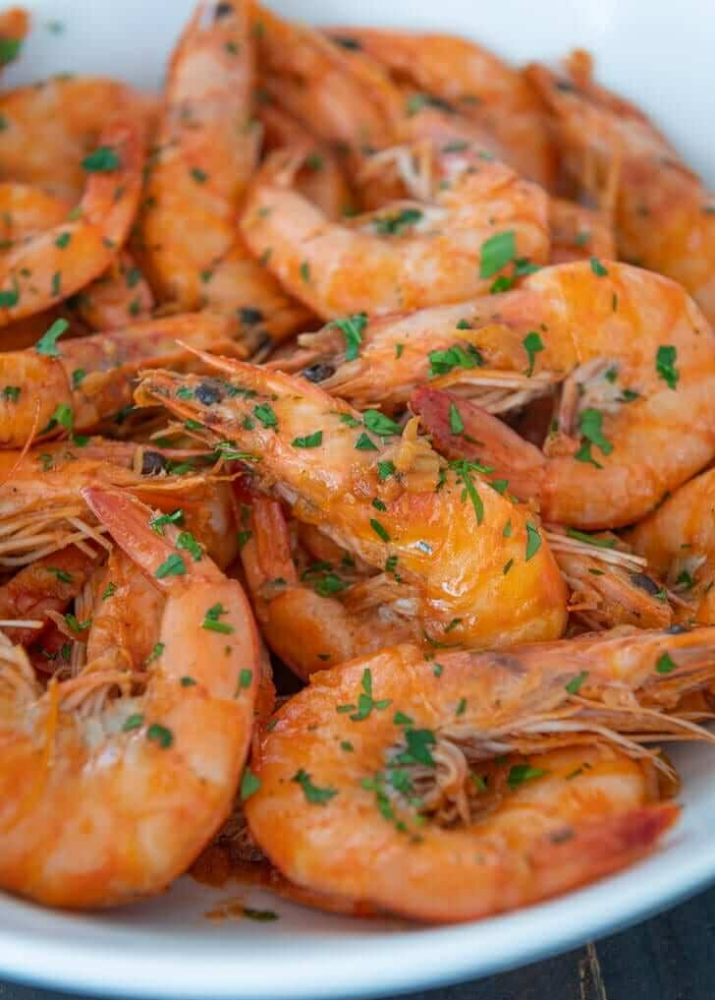

Ingredients & Method
- 1 lb shrimp, cleaned
- 1/4 cup butter
- 1 head garlic, minced
- 1/4 cup lemon soda (Sprite/7Up)
- Salt and pepper to taste
- Melt butter in a pan.
- Add garlic and sauté until fragrant.
- Put shrimp and cook until color turns orange.
- Pour lemon soda, season with salt and pepper.
- Cook for 3–5 minutes and serve.
